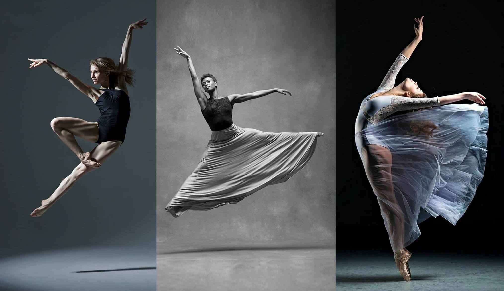

Bases de la Danza Clásica

La danza clásica, comúnmente conocida como ballet, es una forma de expresión artística que combina movimientos precisos, técnica refinada y estética. Su historia se remonta al Renacimiento, donde se formalizó en las cortes europeas, y se consolidó en Francia bajo el reinado de Luis XIV, quien promovió la formación de academias de danza. A lo largo de los siglos, la danza clásica ha evolucionado, adaptándose a nuevas concepciones estéticas y estilos, pero siempre manteniendo su esencia de gracia y disciplina. Esta disciplina no solo es una forma de entretenimiento, sino también un medio de comunicación artística que ha influido en otras formas de danza y arte.
Categoría: Arte
Ver Detalle
Investigacion de Álgebra
.webp)
El álgebra es una rama fundamental de las matemáticas que estudia las estructuras y relaciones entre números y símbolos. Se originó en la antigua Mesopotamia y se formalizó en el siglo IX por Al-Juarismi, quien introdujo el uso de letras para representar cantidades desconocidas. El álgebra permite resolver ecuaciones y problemas complejos, y tiene aplicaciones en diversas disciplinas como la economía, la ingeniería y la ciencia. Además, fomenta habilidades de razonamiento lógico y pensamiento matemático
Categoría: Lógica
Ver Detalle
Raíces de la Música
.webp)
La música tiene sus raíces en la prehistoria, donde los primeros humanos utilizaban sonidos naturales y objetos rudimentarios para crear melodías. Con el tiempo, la música evolucionó y se convirtió en un arte universal que organiza sonidos y silencios para crear un lenguaje emocional único. La música ha sido un medio de entretenimiento, educación, expresión religiosa y cohesión social a lo largo de la historia. Su evolución ha sido influenciada por las civilizaciones antiguas, como los egipcios, griegos y romanos, quienes desarrollaron instrumentos más complejos y utilizaban la música en rituales y ceremonias. La música también ha sido un pilar de la vida espiritual en la Edad Media, especialmente el canto gregoriano.
Categoría: Arte
Ver Detalle
Importancia de la Geografía
La geografía es fundamental para entender las dinámicas sociales y ambientales del mundo. Permite anticipar y prevenir desastres naturales, planificar el crecimiento urbano de manera sostenible y abordar problemas como el cambio climático y las desigualdades sociales. Además, el conocimiento geográfico es esencial para la gestión ambiental y la planificación de recursos.
Categoría: Ciencia
Ver Detalle
Lenguajes de Programación

Un lenguaje de programación es un lenguaje formal compuesto por símbolos, reglas sintácticas y semánticas que permiten escribir código comprensible para una computadora, actuando como puente entre la lógica humana y la máquina. A través de él, los desarrolladores crean programas que controlan el comportamiento de sistemas informáticos y procesan datos de manera eficiente
Categoría: Lógica
Ver Detalle